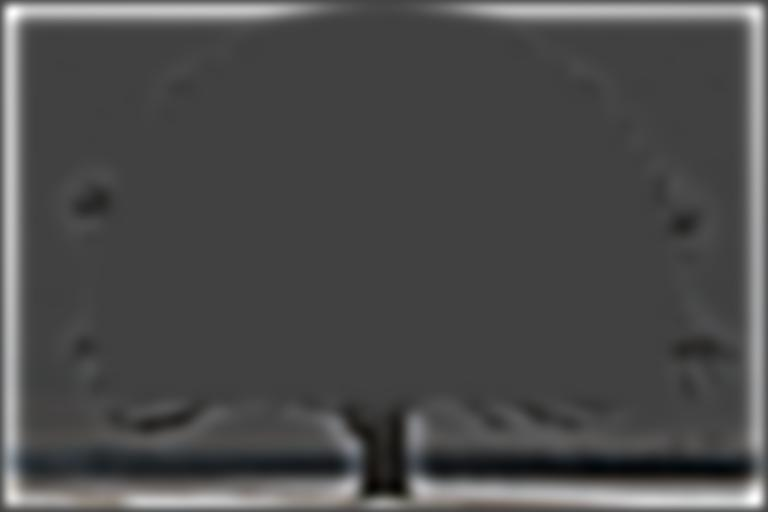
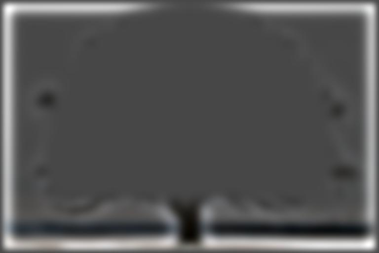

I implemented convolution code using numpy. The four loop version iterates both dimensions of both the image and the kernel. The two loop version iterates on both dimensions of the kernel. The code for the four and two loop versions is shown below:
def pad(img, row_border, col_border):
padded = np.zeros((img.shape[0]+2*row_border, img.shape[1]+2*col_border))
x, y = padded.shape
padded[row_border:row_border+img.shape[0],
col_border:col_border+img.shape[1]] = img
return padded
# kernel flipping for convolution
def flip(kernel):
return kernel[::-1, ::-1]
# expects 2D kernel. If 1D, broadcast the input
def four_loop_conv(img, kernel):
row_border, col_border = kernel.shape[0] // 2, kernel.shape[1] // 2
padded = pad(img, row_border, col_border)
conv_kernel = flip(kernel)
output = np.zeros(img.shape)
for i in range(img.shape[0]):
for j in range(img.shape[1]):
total = 0.0
for k in range(conv_kernel.shape[0]):
for l in range(conv_kernel.shape[1]):
total += conv_kernel[k, l] * padded[i+k, j+l]
output[i, j] = total
return output
def two_loop_conv(img, kernel):
row_border, col_border = kernel.shape[0] // 2, kernel.shape[1] // 2
padded = pad(img, row_border, col_border)
conv_kernel = flip(kernel)
output = np.zeros(img.shape)
for k in range(conv_kernel.shape[0]):
for l in range(conv_kernel.shape[1]):
output += conv_kernel[k, l] * padded[k:k+img.shape[0], l:l+img.shape[1]]
return output
I ran these functions, as well as scipy.signal.convolve2d, on a 4032 x 3024 size image with a 9x9 box filter and the finite difference operators. The table below shows the runtimes.
| Function | Kernel | Time (seconds to the nearest hundredth) |
| Four loop convolution | 9x9 box filter | 165.58 |
| Two loop convolution | 9x9 box filter | 1.22 |
| scipy.signal.convolve2d | 9x9 box filter | 1.32 |
| Four loop convolution | Dx | 9.60 |
| Two loop convolution | Dx | 0.08 |
| scipy.signal.convolve2d | Dx | 0.10 |
| Four loop convolution | Dy | 11.11 |
| Two loop convolution | Dy | 0.07 |
| scipy.signal.convolve2d | Dy | 0.13 |
For scipy.signal.convolve2d, I used mode="same" to get the boundaries to be handled in a manner where the output of the convolution is the same size as the input. My two and four loop convolution functions also handle boundaries this way. The two-loop and scipy functions were much faster than the four loop convolution. This is likely due to those functions spending less time in python and allowing for more lower level optimizations.
Here are the partial derivative and gradient magnitude images for the cameraman image. Note that all images have been automatically contrasted in the same way as the previous part. The threshold for binarizing the gradient image is based on the original gradient magnitudes, not the normalized values.
| Image Type | Image |
| Dx filter | |
| Dy filter | |
| Gradient Magnitude | |
| Binarized Gradients (threshold = 0.3) |
For the binarized gradient magnitude image, I chose a threshold of 0.3. I tested a lot of different thresholds and found that this value removes most of the noise from the grass at the bottom of the image while still maintaining most of the outline of the cameraman and a significant amount of the bridge in the background. I found that smaller thresholds included too much noise from the grass, while larger thresholds excluded significant parts of the cameraman's outline and most of the bridge.
Here are the partial derivative and gradient magnitude images for the cameraman image after applying a 3x3 gaussian filter with standard deviation 1. Note that all images have been automatically contrasted in the same way as the previous part. The threshold for binarizing the gradient image is based on the original gradient magnitudes, not the normalized values.
| Image Type | Image |
| Dx filter | |
| Dy filter | |
| Gradient Magnitude | |
| Binarized Gradients (threshold = 0.21) |
The images from the difference and gradient operators contain much smoother edges
and less noise. Notably, I was able to use a lower threshold for the binarized
gradient image, and it still has less noise when compared to the binarized
gradient image from 1.2.
I also convolved the finite different filters with the gaussian filter to create
a filter that can do the finite difference and gaussian convolutions with one
convolution operation. Notably, mode on scipy.signal.convolve2d had to be set to "full"
in order for associativity of convolution to apply. I checked the new kernels were
guaranteed to give the same result as doing two convolutions
by comparing the l2 distance of using a single
convolution with the new kernel versus two convolutions with the previous kernels.
Here are the results of applying a low pass and high pass filter to the Taj Mahal image. The high pass filter was computed by subtracting the Gaussian (low pass) filter from the unit impulse (identity) filter. The unsharp mask filter was computed by adding the unit impulse (identity) filter to the high pass filter, with the values on the high pass filter scaled by parameter α. Results of applying the unsharp mask filter at various magnitudes are also shown.
| Image Type | Image |
| Original |  |
| Low Pass Filter (Gaussian Kernel) | |
| High Pass Filter (Original - Low Pass, image is contrasted) |  |
| Image with Unsharp Filter (α = 2) |  |
| Image with Unsharp Filter (α = 10) |
With α=2, the edges of the image look sharper. With a higher value like
α=10, a significant amount of noise is visible.
I also ran the same filters over an image of Berkeley, as shown below.
| Image Type | Image |
| Original | |
| Low Pass Filter (Gaussian Kernel) | |
| High Pass Filter (Original - Low Pass, image is contrasted) | |
| Image with Unsharp Filter (α = 2) | |
| Image with Unsharp Filter (α = 10) |
To implement hybrid images, I first aligned images using the image aliging function provided. Based on two points select on each image, the algorithm attempts to resize and rotate one image so that the two points on each image are at the same positions after alignment. I chose points that would be analogous to each other on both images. Afterwards, if there is significant unused region, I would crop it out of the images. For instance, the original images of Derek and Nutemg and their aligned and cropped versions are shown below.
| Setting | Derek | Nutmeg |
| Original Images |  |
 |
| Aligned and Cropped Images |
Aftewards, I would run a low pass filter on one image (Derek in this case), and a high pass filter over the other (Nutmeg in this case). The hybrid image would be the average of the two images (by arithmetic mean).
| Derek (49x49 kernel, σ=16.0) | Nutmeg (49x49 kernel, σ=4.0) | Hybrid Image |
I chose the cutoff frequencies (choices for σ) based on manual inspection.
I found that I typically used a lower cutoff frequency for the high frequecy
image so that it would be less visible from a distance. I chose a higher cutoff
frequency for the low frequency image to make the image less noticeable when
viewed from up close.
I also took the fourier transforms of the images above.
| Derek (49x49 kernel, σ=16.0) | Nutmeg (49x49 kernel, σ=4.0) | Hybrid Image |
The low frequency image in the fourier domain has higher intensity near the origin,
whereas the high frequency image in the fourier domain has higher intensity some
distance away from the origin. The hybrid image in the fourier domain is the average
of the other two images in the fourier domain.
For these images specifically, the high frequency image (Nutmeg the cat)
in the fourier domain has noticeable diagonal lines. This is likely due to
Nutmeg's whisker's being diagonal, creating high frequencies in those diagonal directions.
The results of the hybrid image procedure on other images is shown below. The top row
(baseball and basketball) was done with a 49x49 kernel, while the bottom row (two trees)
was done with a 25x25 kernel.
| Original Low Frequency Image (σ = 16.0) | Original High Frequency Image (σ = 4.0) | Hybrid Image |
 |
||
 |
When blending images, it may be desirable to mask features of the individual images
at different frequences based on the frequencies of those images. For instance, with
an apple and orange, the general colors (red and orange) should be blended smoothly
at low frequency, but higher frequency features, like the texture on the orange,
are masked with a sharper filter to prevent those features from showing up on the apple.
A figure visualizing the Laplacian stacks, multiplied by their
mask on the corresponding layer of the Gaussian stack, is shown below.
Images of parts of the Laplacian stack have been contrasted for viewability.
The first row
shows the first layer of the Laplacian stack - the features of highest frequency.
The second row shows layers around the middle of the stack, where features
of medium frequency are.
The third row shows low frequency features near the end of the Laplacian stack.
The last row shows the results of reconstructing the Laplacian stacks after applying
the Gaussian stack of the mask.
| Stack Layer (lower number is higher frequency) | Apple | Orange | Hybrid Image |
| Layer 0 (Highest Frequency) | |||
| Layer 4 (Medium Frequency) | |||
| Layer 8 (Low Frequency) | |||
| Layers Combined |
The bottom right image in the table above is the final result of image blending.
Here are results of blending images together. These involve image blending with irregular masks. Those masks were made by taking an image of a circle, and resizing and cropping that image.
| Original Image 1 | Original Image 2 | Mask | Hybrid Image |
 |
|||
| |
I have visualized the process of blending the tree images below, similar to the oraple image.
| Stack Layer | Tree with Leaves | Tree without Leaves | Hybrid Image |
| Layer 0 (Highest Frequency) | |||
| Layer 4 (Medium Frequency) |  | ||
| Layer 8 (Low Frequency) |  | ||
| Layers Combined |